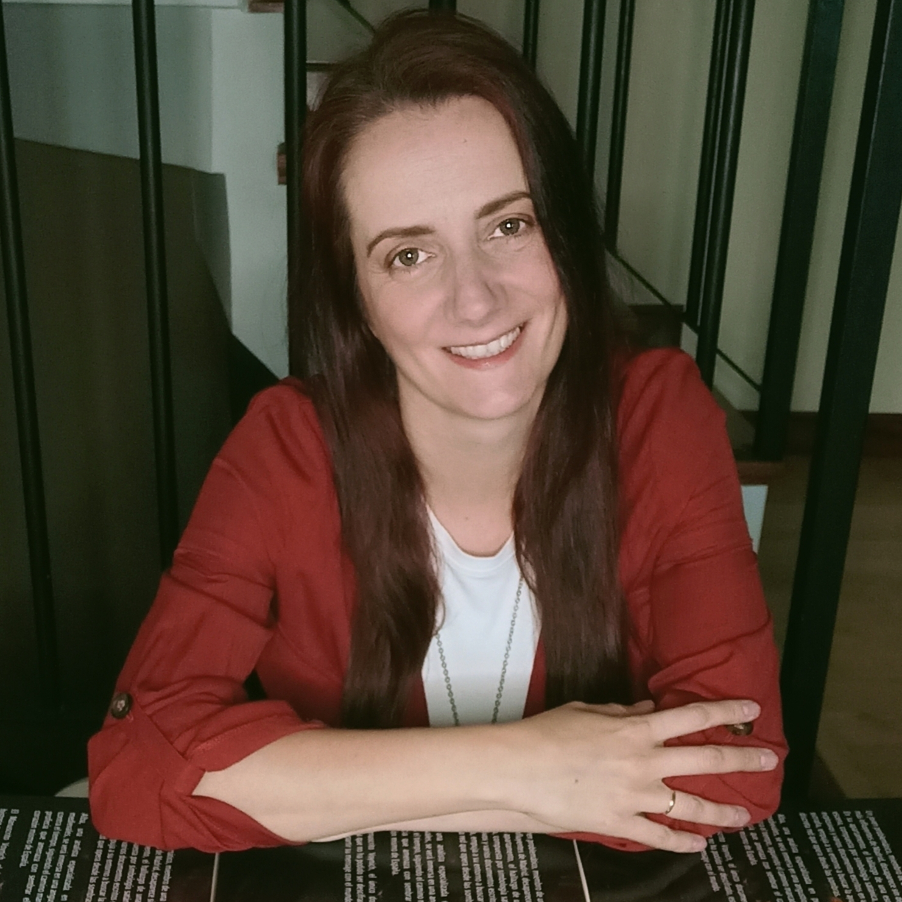

Thriller · Misterio
Los crímenes de la esquela
Alejandra de San Cristóbal
A veces, lo más aterrador no es lo que te espera al final, sino lo que descubres por el camino.
Ya disponible en Amazon
A veces, lo más aterrador no es lo que te espera al final, sino lo que descubres por el camino.
¿Una broma? ¿Una advertencia?
Todo comienza con una esquela en el periódico: su nombre, su fotografía y la fecha de su muerte dentro de una semana.
Sin respuestas, la vida de Diego empieza a desmoronarse rápidamente. Llamadas extrañas, accidentes, alguien siguiendo sus pasos… Incluso su propia familia actúa como si le ocultara algo.
Desesperado por encontrar apoyo, acude a un antiguo profesor de criminología, experto en comunicación no verbal, que vive recluido en una librería, huyendo de sus propios demonios. Juntos intentarán descubrir quién está detrás del anuncio de su muerte y qué oscuro motivo se esconde tras su publicación.
Solo existe una opción: averiguar la verdad antes de que acabe el plazo marcado y sea demasiado tarde. Sobrevivir dependerá de elegir bien en quién confiar.
Porque, a veces, lo más aterrador no es lo que te espera al final, sino lo que descubres por el camino.
¿Quieres tu ejemplar firmado por la autora? Ponte en contacto con ella a través de sus redes.
Ver sus redes
Alejandra de San Cristóbal, nacida en Vizcaya en 1979, se siente cántabra de adopción. Diplomada en Educación Social y lectora voraz, no publicó su primera novela, Awen: Viajeros de la noche, hasta 2018, iniciando con ella una trilogía juvenil repleta de aventura y fantasía, que continuó con El segundo viaje Awen: La pirámide negra y El tercer viaje Awen: El volcán rojo. En sus historias siempre están presentes los enigmas y acertijos.
En 2020 cambió de registro para adentrarse en el misterio, mezclando datos históricos reales con la ficción: así nacieron El maestro de ilusiones y La clave de Agatha, tras la pista de personajes tan célebres como Harry Houdini o Agatha Christie. En 2022, La sombra de la Gioconda permaneció siete meses consecutivos en el Top 100 general de los más vendidos de Amazon España, con una explicación tan ficticia como plausible del robo de la Mona Lisa en el Louvre en 1911.
Siempre en busca de misterios reales sin resolver, sorprendió en 2023 con La profecía de las 6 puertas, construida alrededor del Manuscrito Voynich, y en 2024 con El corredor de los engendros, un viaje por el Londres de Jack el Destripador. Con Los crímenes de la esquela (2026) se consolida como autora de suspense: novelas de giros inesperados y finales capaces de sorprender hasta la última página.
Encuentra a la autora en Facebook. Escríbele para hablar del libro o pedir tu ejemplar firmado.